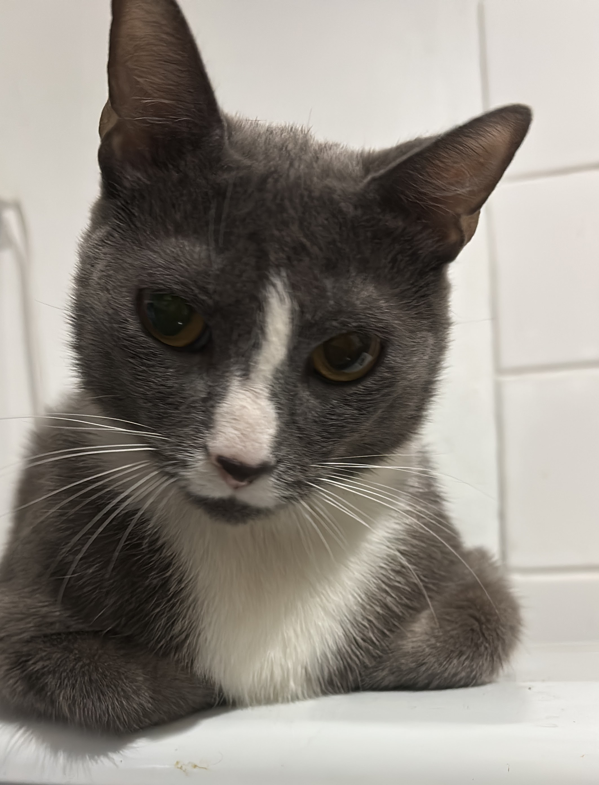
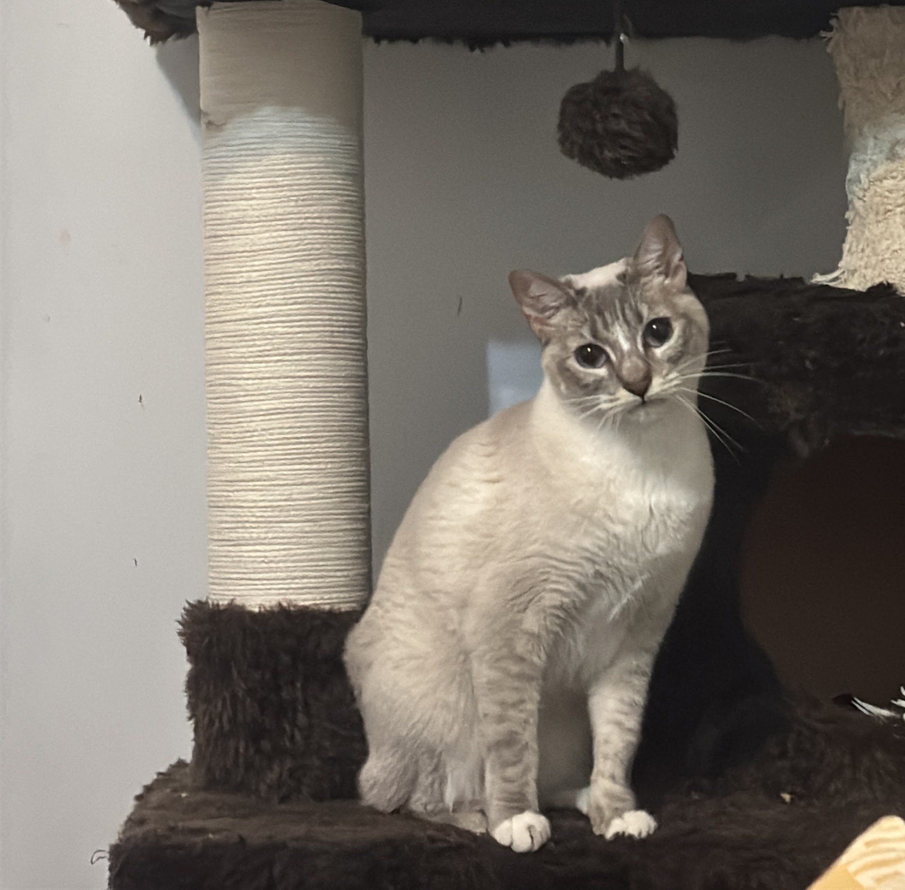
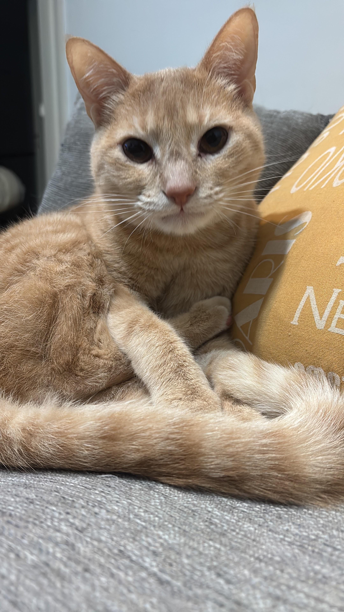

Los protagonistas 🐱
¿Quiénes son los dueños de mi billetera?

Isi 🧡
♀ Mamá · Nov 2021
Atigrada naranja y blanca. Llegó de rescate con 3 semanas. La más cariñosa de todos.

Micky
♂ Papá · Nov 2021
Gris atigrado. Llegó junto a Isi. Tranquilo, dormilón y muy serio.

Kendra 🤍
♀ Hija · Oct 2022
Blanca con manchas oscuras. Nació en casa. La más curiosa e inquieta.

Ron 🧡
♂ Hijo · Oct 2022
Naranja intenso. Hermano de Kendra. El más juguetón y travieso de la casa.